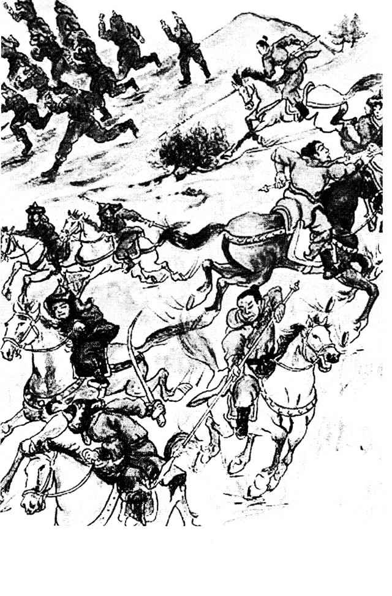

Chương 34 (Chương Kết)
Xin bổ xung thêm một số hình ảnh

Vua gia Long

Vua hàm nghi

Vua Thành thái và hai em

Vua thành thái lúc còn trên ngôi

Vua thành thái trong triều phục

Vua Thành Thái trong lúc bị đày bên đảo Réunion

Vua Thành Thái về thăm Huế lần cuối (1953)

Bà Ðoàn Thị Châu, thứ phi của cựu hoàng Thành Thái

Bà Nguyễn Thị Ðịnh, thứ phi của cựu hoàng Thành Thái, mẹ của vua Duy Tân

Vua Duy Tân

Vua Duy Tân (1907)

Vua Duy Tân (19-9-1907)

Vua Duy Tân (5-9-1907)

Vua Duy Tân (năm 30 tuổi)

Bà vương phi Mai Thị Vàng, một trong những thứ phi của vua Duy Tân (năm 72 tuổi)

Vua Khải Ðịnh

Vua Khải Ðịnh và viên công sứ pháp

Vua Bảo Ðại

Vua Bảo Ðại (1925)

Vua Bảo Ðại

Vua Bảo Ðại

Vua Bảo Ðại tới thăm vua Thành Thái tại Saigon (1953)

Hoàng hậu Nam Phương, vợ chánh của vua Bảo Ðại

Hoàng tử Bảo Long, con của vua Bảo Ðại

Vua Bảo Đại

Vua Bảo Đại
Chân thành cảm ơn Mars và VietDuongNhan đã bổ sung thêm hình ảnh cho tác phẩm nầy.